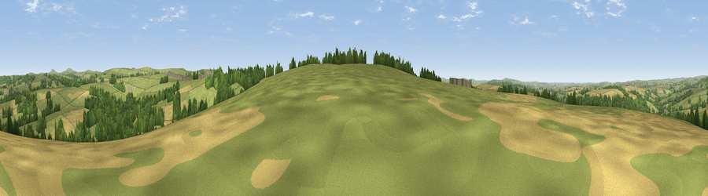

Viewpoint near Helland
#12058 in England · top 25% of its area beats it · near HellandThe view, rendered

A 360° render of this exact spot computed from the terrain model, tree cover and land cover — summer colours, afternoon light, calibrated against photographs of famous viewpoints. Real trees, hedges and buildings will differ in detail.
The panorama
Grey silhouette: terrain skyline in each direction (720 bearings, Earth curvature and refraction included). Dashed green: skyline with trees (+15 m) and buildings (+8 m) as obstacles. Blue strip: how far the ground is visible on each bearing.
Where the view opens
Wedge length = distance to the farthest visible ground on that bearing (vegetation-aware). Rings at 10, 25 and 50 km.
What fills the view
62% grassland · 19% woodland · 18% cropland ·
Angular shares of the visible panorama (visual magnitude), not map area. Landscape diversity 0.43 (0–1 Shannon).
Key numbers
More beautiful places nearby
The staircase of upgrades: each row has a higher view potential than everything closer. Driving times are estimates from straight-line distance, calibrated against real road routing — check an actual route before setting out.
| Place | Direction | Drive | Score |
|---|---|---|---|
| Viewpoint near Helland | S · 1 km | ~2 min | 65.1 |
| Viewpoint near Blisland | ENE · 3 km | ~7 min | 65.6 |
| Viewpoint near Blisland | NNE · 3 km | ~7 min | 67.0 |
| Viewpoint near Cardinham | ESE · 4 km | ~9 min | 71.1 |
| Viewpoint near Lanivet | SSW · 8 km | ~17 min | 73.1 |
| Berry Down | E · 10 km | ~20 min | 73.5 |
| Brown Willy | NNE · 11 km | ~21 min | 77.3 |
| Viewpoint near Port Isaac | NW · 12 km | ~22 min | 79.7 |
50.50846, -4.68556 · source: screening · position refined by local search. Computed location — check access rights before visiting.